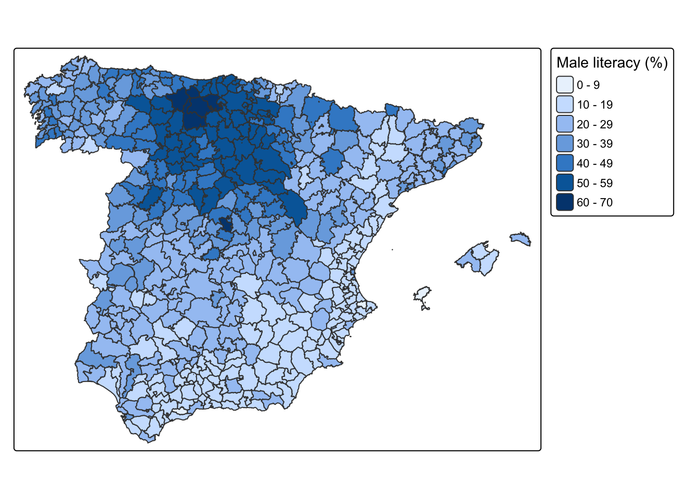
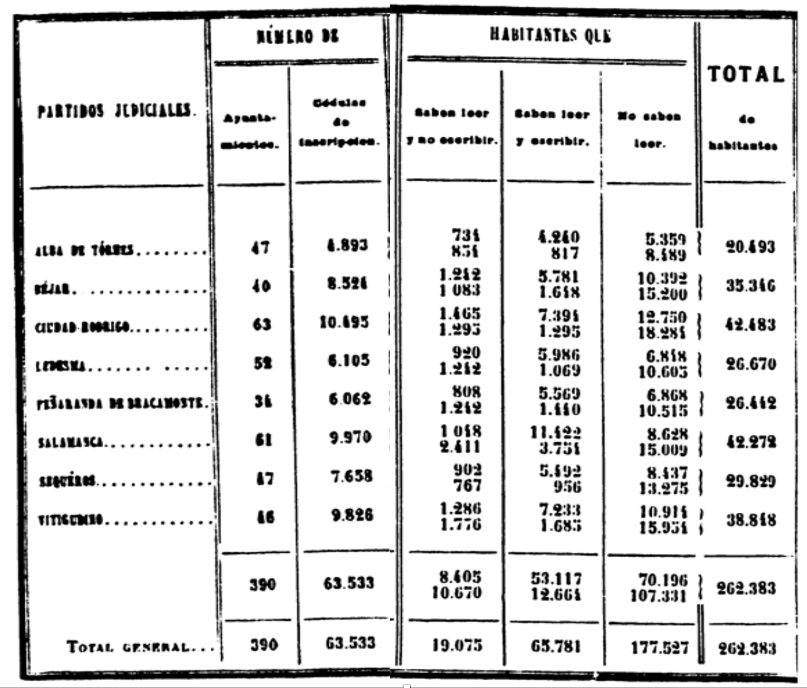

2. In-class coursework: Numerical fields
This practice session is based on the summaries of the Spanish 1860 Population Census. This source reports information at the district level for the whole of Spain and is especially suited to study the educational levels of the population. As well as the name of each administrative unit (district) and the province it belonged to, the data set contains the number of males and females living in those districts who were illiterate (illit_m and illit_f), able to read (read_m and read_f) and able to write (write_m and write_f). You can find the data here (Beltrán Tapia and Martínez-Galarraga 2018) (the Canary Islands are not included).

Sample image of the Statistical report based on the 1860 Spanish Census and male literacy rates by partido judicial (district). Source: INE Historia.
Male literacy rates by partido judicial (district), 1860.
Download the data set into a folder of your choice and read it into R. Remember to set the working directory and load the necessary packages. Note also that this is a .csv file, so you will need the function
read_csv(), which is part of thetidyverse.Explore how the data set looks like. How many observations does it contain? What each observations refers to (unit of analysis)? What kind of information does it report about each observation?
Compute literacy rates, that is, the percentage of the population who were able to read and write, for both males and females for each district. What are the minimum and maximum values of literacy? Identify the districts that perform best and worst in terms of literacy.
What is the average literacy rate?
Construct a histogram showing the full distribution of both male and female literacy rates.
Compute average male literacy rates at the province level. Do the same but weighting this measure by the existing male population. Which province ranked highest and lowest in terms of male literacy.
References
Beltrán Tapia, Francisco J., and Julio Martínez-Galarraga. 2018. “Inequality and Education in Pre-Industrial Economies: Evidence from Spain.” Explorations in Economic History 69: 81–101.